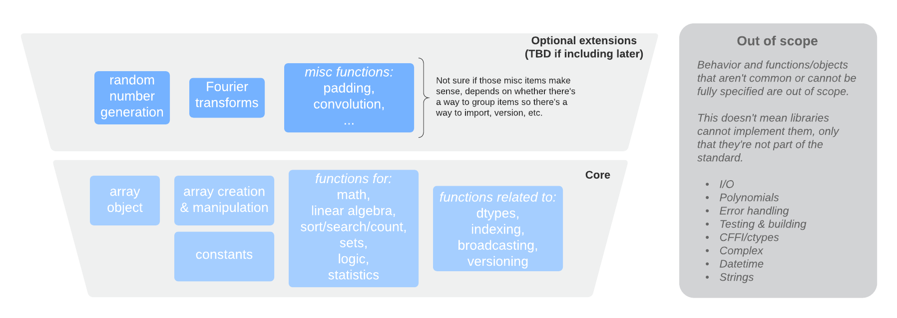

NEP 47 — Adopting the array API standard¶
- Author
Ralf Gommers <ralf.gommers@gmail.com>
- Author
Stephan Hoyer <shoyer@gmail.com>
- Author
Aaron Meurer <asmeurer@gmail.com>
- Status
Draft
- Type
Standards Track
- Created
2021-01-21
- Resolution
Abstract¶
We propose to adopt the Python array API standard, developed by the Consortium for Python Data API Standards. Implementing this as a separate new namespace in NumPy will allow authors of libraries which depend on NumPy as well as end users to write code that is portable between NumPy and all other array/tensor libraries that adopt this standard.
Note
We expect that this NEP will remain in a draft state for quite a while. Given the large scope we don’t expect to propose it for acceptance any time soon; instead, we want to solicit feedback on both the high-level design and implementation, and learn what needs describing better in this NEP or changing in either the implementation or the array API standard itself.
Motivation and Scope¶
Python users have a wealth of choice for libraries and frameworks for numerical computing, data science, machine learning, and deep learning. New frameworks pushing forward the state of the art in these fields are appearing every year. One unintended consequence of all this activity and creativity has been fragmentation in multidimensional array (a.k.a. tensor) libraries - which are the fundamental data structure for these fields. Choices include NumPy, Tensorflow, PyTorch, Dask, JAX, CuPy, MXNet, and others.
The APIs of each of these libraries are largely similar, but with enough differences that it’s quite difficult to write code that works with multiple (or all) of these libraries. The array API standard aims to address that issue, by specifying an API for the most common ways arrays are constructed and used. The proposed API is quite similar to NumPy’s API, and deviates mainly in places where (a) NumPy made design choices that are inherently not portable to other implementations, and (b) where other libraries consistently deviated from NumPy on purpose because NumPy’s design turned out to have issues or unnecessary complexity.
For a longer discussion on the purpose of the array API standard we refer to the Purpose and Scope section of the array API standard and the two blog posts announcing the formation of the Consortium 1 and the release of the first draft version of the standard for community review 2.
The scope of this NEP includes:
Adopting the 2021 version of the array API standard
Adding a separate namespace, tentatively named
numpy.array_apiChanges needed/desired outside of the new namespace, for example new dunder methods on the
ndarrayobjectImplementation choices, and differences between functions in the new namespace with those in the main
numpynamespaceA new array object conforming to the array API standard
Maintenance effort and testing strategy
Impact on NumPy’s total exposed API surface and on other future and under-discussion design choices
Relation to existing and proposed NumPy array protocols (
__array_ufunc__,__array_function__,__array_module__).Required improvements to existing NumPy functionality
Out of scope for this NEP are:
Changes in the array API standard itself. Those are likely to come up during review of this NEP, but should be upstreamed as needed and this NEP subsequently updated.
Usage and Impact¶
This section will be fleshed out later, for now we refer to the use cases given in the array API standard Use Cases section
In addition to those use cases, the new namespace contains functionality that is widely used and supported by many array libraries. As such, it is a good set of functions to teach to newcomers to NumPy and recommend as “best practice”. That contrasts with NumPy’s main namespace, which contains many functions and objects that have been superseded or we consider mistakes - but that we can’t remove because of backwards compatibility reasons.
The usage of the numpy.array_api namespace by downstream libraries is
intended to enable them to consume multiple kinds of arrays, without having
to have a hard dependency on all of those array libraries:
Adoption in downstream libraries¶
The prototype implementation of the array_api namespace will be used with
SciPy, scikit-learn, and other libraries of interest that depend on NumPy, in
order to get more experience with the design and find out if any important
parts are missing.
The pattern to support multiple array libraries is intended to be something like:
def somefunc(x, y):
# Retrieves standard namespace. Raises if x and y have different
# namespaces. See Appendix for possible get_namespace implementation
xp = get_namespace(x, y)
out = xp.mean(x, axis=0) + 2*xp.std(y, axis=0)
return out
The get_namespace call is effectively the library author opting in to
using the standard API namespace, and thereby explicitly supporting
all conforming array libraries.
The asarray / asanyarray pattern¶
Many existing libraries use the same asarray (or asanyarray) pattern
as NumPy itself does; accepting any object that can be coerced into a np.ndarray.
We consider this design pattern problematic - keeping in mind the Zen of
Python, “explicit is better than implicit”, as well as the pattern being
historically problematic in the SciPy ecosystem for ndarray subclasses
and with over-eager object creation. All other array/tensor libraries are
more strict, and that works out fine in practice. We would advise authors of
new libraries to avoid the asarray pattern. Instead they should either
accept just NumPy arrays or, if they want to support multiple kinds of
arrays, check if the incoming array object supports the array API standard
by checking for __array_namespace__ as shown in the example above.
Existing libraries can do such a check as well, and only call asarray if
the check fails. This is very similar to the __duckarray__ idea in
NEP 30 — Duck typing for NumPy arrays - Implementation.
Adoption in application code¶
The new namespace can be seen by end users as a cleaned up and slimmed down version of NumPy’s main namespace. Encouraging end users to use this namespace like:
import numpy.array_api as xp
x = xp.linspace(0, 2*xp.pi, num=100)
y = xp.cos(x)
seems perfectly reasonable, and potentially beneficial - users get offered only one function for each purpose (the one we consider best-practice), and they then write code that is more easily portable to other libraries.
Backward compatibility¶
No deprecations or removals of existing NumPy APIs or other backwards incompatible changes are proposed.
High-level design¶
The array API standard consists of approximately 120 objects, all of which have a direct NumPy equivalent. This figure shows what is included at a high level:
The most important changes compared to what NumPy currently offers are:
A new array object,
numpy.array_api.Arraywhich:is a thin pure Python (non-subclass) wrapper around
np.ndarray,conforms to the casting rules and indexing behavior specified by the standard,
does not have methods other than dunder methods,
does not support the full range of NumPy indexing behavior (see Indexing below),
does not have distinct scalar objects, only 0-D arrays,
cannot be constructed directly. Instead array construction functions like
asarray()should be used.
Functions in the
array_apinamespace:do not accept
array_likeinputs, onlynumpy.array_apiarray objects, with Python scalars only being supported in dunder operators on the array object,do not support
__array_ufunc__and__array_function__,use positional-only and keyword-only parameters in their signatures,
have inline type annotations,
may have minor changes to signatures and semantics of individual functions compared to their equivalents already present in NumPy,
only support dtype literals, not format strings or other ways of specifying dtypes,
generally may only support a restricted set of dtypes compared to their NumPy counterparts.
DLPack support will be added to NumPy,
New syntax for “device support” will be added, through a
.deviceattribute on the new array object, anddevice=keywords in array creation functions in thearray_apinamespace,Casting rules will differ from those NumPy currently has. Output dtypes can be derived from input dtypes (i.e. no value-based casting), and 0-D arrays are treated like >=1-D arrays. Cross-kind casting (e.g., int to float) is not allowed.
Not all dtypes NumPy has are part of the standard. Only boolean, signed and unsigned integers, and floating-point dtypes up to
float64are supported. Complex dtypes are expected to be added in the next version of the standard. Extended precision, string, void, object and datetime dtypes, as well as structured dtypes, are not included.
Improvements to existing NumPy functionality that are needed include:
Add support for stacks of matrices to some functions in
numpy.linalgthat are currently missing such support.Add the
keepdimskeyword tonp.argminandnp.argmax.Add a “never copy” mode to
np.asarray.Add smallest_normal to
np.finfo().DLPack support.
Additionally, the numpy.array_api implementation was chosen to be a
minimal implementation of the array API standard. This means that it not
only conforms to all the requirements of the array API, but it explicitly does
not include any APIs or behaviors not explicitly required by it. The standard
itself does not require implementations to be so restrictive, but doing this
with the NumPy array API implementation will allow it to become a canonical
implementation of the array API standard. Anyone who wants to make use of the
array API standard can use the NumPy implementation and be sure that their
code is not making use of behaviors that will not be in other conforming
implementations.
In particular, this means
numpy.array_apiwill only include those functions that are listed in the standard. This also applies to methods on theArrayobject,Functions will only accept input dtypes that are required by the standard (e.g., transcendental functions like
coswill not accept integer dtypes because the standard only requires them to accept floating-point dtypes),Type promotion will only occur for combinations of dtypes required by the standard (see the Dtypes and casting rules section below),
Indexing is limited to a subset of possible index types (see Indexing below).
Functions in the array_api namespace¶
Let’s start with an example of a function implementation that shows the most important differences with the equivalent function in the main namespace:
def matmul(x1: Array, x2: Array, /) -> Array:
"""
Array API compatible wrapper for :py:func:`np.matmul <numpy.matmul>`.
See its docstring for more information.
"""
if x1.dtype not in _numeric_dtypes or x2.dtype not in _numeric_dtypes:
raise TypeError("Only numeric dtypes are allowed in matmul")
# Call result type here just to raise on disallowed type combinations
_result_type(x1.dtype, x2.dtype)
return Array._new(np.matmul(x1._array, x2._array))
This function does not accept array_like inputs, only
numpy.array_api.Array. There are multiple reasons for this. Other array
libraries all work like this. Requiring the user to do coercion of Python
scalars, lists, generators, or other foreign objects explicitly results in a
cleaner design with less unexpected behavior. It is higher-performance—less
overhead from asarray calls. Static typing is easier. Subclasses will work
as expected. And the slight increase in verbosity because users have to
explicitly coerce to ndarray on rare occasions seems like a small price to
pay.
This function does not support __array_ufunc__ nor __array_function__.
These protocols serve a similar purpose as the array API standard module itself,
but through a different mechanisms. Because only Array instances are accepted,
dispatching via one of these protocols isn’t useful anymore.
This function uses positional-only parameters in its signature. This makes
code more portable—writing, for instance, max(a=a, ...) is no longer
valid, hence if other libraries call the first parameter input rather than
a, that is fine. Note that NumPy already uses positional-only arguments
for functions that are ufuncs. The rationale for keyword-only parameters (not
shown in the above example) is two-fold: clarity of end user code, and it
being easier to extend the signature in the future without worrying about the
order of keywords.
This function has inline type annotations. Inline annotations are far easier to maintain than separate stub files. And because the types are simple, this will not result in a large amount of clutter with type aliases or unions like in the current stub files NumPy has.
This function only accepts numeric dtypes (i.e., not bool). It also does
not allow the input dtypes to be of different kinds (the internal
_result_type() function will raise TypeError on cross-kind type
combinations like _result_type(int32, float64)). This allows the
implementation to be minimal. Preventing combinations that work in NumPy but
are not required by the array API specification lets users of the submodule
know they are not relying on NumPy specific behavior that may not be present
in array API conforming implementations from other libraries.
DLPack support for zero-copy data interchange¶
The ability to convert one kind of array into another kind is valuable, and
indeed necessary when downstream libraries want to support multiple kinds of
arrays. This requires a well-specified data exchange protocol. NumPy already
supports two of these, namely the buffer protocol (i.e., PEP 3118), and
the __array_interface__ (Python side) / __array_struct__ (C side)
protocol. Both work similarly, letting the “producer” describe how the data
is laid out in memory so the “consumer” can construct its own kind of array
with a view on that data.
DLPack works in a very similar way. The main reasons to prefer DLPack over the options already present in NumPy are:
DLPack is the only protocol with device support (e.g., GPUs using CUDA or ROCm drivers, or OpenCL devices). NumPy is CPU-only, but other array libraries are not. Having one protocol per device isn’t tenable, hence device support is a must.
Widespread support. DLPack has the widest adoption of all protocols. Only NumPy is missing support, and the experiences of other libraries with it are positive. This contrasts with the protocols NumPy does support, which are used very little—when other libraries want to interoperate with NumPy, they typically use the (more limited, and NumPy-specific)
__array__protocol.
Adding support for DLPack to NumPy entails:
Adding a
ndarray.__dlpack__()method which returns adlpackC structure wrapped in aPyCapsule.Adding a
np._from_dlpack(obj)function, whereobjsupports__dlpack__(), and returns anndarray.
DLPack is currently a ~200 LoC header, and is meant to be included directly, so no external dependency is needed. Implementation should be straightforward.
Syntax for device support¶
NumPy itself is CPU-only, so it clearly doesn’t have a need for device support. However, other libraries (e.g. TensorFlow, PyTorch, JAX, MXNet) support multiple types of devices: CPU, GPU, TPU, and more exotic hardware. To write portable code on systems with multiple devices, it’s often necessary to create new arrays on the same device as some other array, or to check that two arrays live on the same device. Hence syntax for that is needed.
The array object will have a .device attribute which enables comparing
devices of different arrays (they only should compare equal if both arrays are
from the same library and it’s the same hardware device). Furthermore,
device= keywords in array creation functions are needed. For example:
def empty(shape: Union[int, Tuple[int, ...]], /, *,
dtype: Optional[dtype] = None,
device: Optional[device] = None) -> Array:
"""
Array API compatible wrapper for :py:func:`np.empty <numpy.empty>`.
"""
if device not in ["cpu", None]:
raise ValueError(f"Unsupported device {device!r}")
return Array._new(np.empty(shape, dtype=dtype))
The implementation for NumPy is as simple as setting the device attribute to
the string "cpu" and raising an exception if array creation functions
encounter any other value.
Dtypes and casting rules¶
The supported dtypes in this namespace are boolean, 8/16/32/64-bit signed and
unsigned integer, and 32/64-bit floating-point dtypes. These will be added to
the namespace as dtype literals with the expected names (e.g., bool,
uint16, float64).
The most obvious omissions are the complex dtypes. The rationale for the lack
of complex support in the first version of the array API standard is that several
libraries (PyTorch, MXNet) are still in the process of adding support for
complex dtypes. The next version of the standard is expected to include complex64
and complex128 (see this issue
for more details).
Specifying dtypes to functions, e.g. via the dtype= keyword, is expected
to only use the dtype literals. Format strings, Python builtin dtypes, or
string representations of the dtype literals are not accepted. This will
improve readability and portability of code at little cost. Furthermore, no
behavior is expected of these dtype literals themselves other than basic
equality comparison. In particular, since the array API does not have scalar
objects, syntax like float32(0.0) is not allowed (a 0-D array can be
created with asarray(0.0, dtype=float32)).
Casting rules are only defined between different dtypes of the same kind (i.e., boolean to boolean, integer to integer, or floating-point to floating-point). This also means omitting integer-uint64 combinations that would upcast to float64 in NumPy. The rationale for this is that mixed-kind (e.g., integer to floating-point) casting behaviors differ between libraries.
Type promotion diagram. Promotion between any two types is given by their join on this lattice. Only the types of participating arrays matter, not their values. Dashed lines indicate that behavior for Python scalars is undefined on overflow. The Python scalars themselves are only allowed in operators on the array object, not inside of functions. Boolean, integer and floating-point dtypes are not connected, indicating mixed-kind promotion is undefined (for the NumPy implementation, these raise an exception).
The most important difference between the casting rules in NumPy and in the
array API standard is how scalars and 0-dimensional arrays are handled. In the
standard, array scalars do not exist and 0-dimensional arrays follow the same
casting rules as higher-dimensional arrays. Furthermore, there is no
value-based casting in the standard. The result type of an operation can be
predicted entirely from its input arrays’ dtypes, regardless of their shapes
or values. Python scalars are only allowed in dunder operations (like
__add__), and only if they are of the same kind as the array dtype. They
always cast to the dtype of the array, regardless of value. Overflow behavior
is undefined.
See the Type Promotion Rules section of the array API standard for more details.
In the implementation, this means
Ensuring any operation that would produce an scalar object in NumPy is converted to a 0-D array in the
Arrayconstructor,Checking for combinations that would apply value-based casting and ensuring they promote to the correct type. This can be achieved, e.g., by manually broadcasting 0-D inputs (preventing them from participating in value-based casting), or by explicitly passing the
signatureargument to the underlying ufunc,In dunder operator methods, manually converting Python scalar inputs to 0-D arrays of the matching dtype if they are the same kind, and raising otherwise. For scalars out of bounds of the given dtype (for which the behavior is undefined by the spec), the behavior of
np.array(scalar, dtype=dtype)is used (either cast or raise OverflowError).
Indexing¶
An indexing expression that would return a scalar with ndarray, e.g.
arr_2d[0, 0], will return a 0-D array with the new Array object. There are
several reasons for this: array scalars are largely considered a design mistake
which no other array library copied; it works better for non-CPU libraries
(typically arrays can live on the device, scalars live on the host); and it’s
simply a more consistent design. To get a Python scalar out of a 0-D array, one can
use the builtin for the type, e.g. float(arr_0d).
The other indexing modes in the standard
do work largely the same as they do for numpy.ndarray. One noteworthy
difference is that clipping in slice indexing (e.g., a[:n] where n is
larger than the size of the first axis) is unspecified behavior, because
that kind of check can be expensive on accelerators.
The standard omits advanced indexing (indexing by an integer array), and boolean indexing is limited to a
single n-D boolean array. This is due to those indexing modes not being
suitable for all types of arrays or JIT compilation. Furthermore, some
advanced NumPy indexing semantics, such as the semantics for mixing advanced
and non-advanced indices in a single index, are considered design mistakes in
NumPy. The absence of these more advanced index types does not seem to be
problematic; if a user or library author wants to use them, they can do so
through zero-copy conversion to numpy.ndarray. This will signal correctly
to whomever reads the code that it is then NumPy-specific rather than portable
to all conforming array types.
Being a minimal implementation, numpy.array_api will explicitly disallow
slices with clipped bounds, advanced indexing, and boolean indices mixed with
other indices.
The array object¶
The array object in the standard does not have methods other than dunder
methods. It also does not allow direct construction, preferring instead array
construction methods like asarray. The rationale for that is that not all
array libraries have methods on their array object (e.g., TensorFlow does
not). It also provides only a single way of doing something, rather than have
functions and methods that are effectively duplicate.
Mixing operations that may produce views (e.g., indexing, nonzero)
in combination with mutation (e.g., item or slice assignment) is
explicitly documented in the standard to not be supported.
This cannot easily be prohibited in the array object itself; instead this will
be guidance to the user via documentation.
The standard current does not prescribe a name for the array object itself. We
propose to name it Array. This uses proper PEP 8 capitalization for a
class, and does not conflict with any existing NumPy class names. 3 Note
that the actual name of the array class does not actually matter that much as
it is not itself included in the top-level namespace, and cannot be directly
constructed.
Implementation¶
A prototype of the array_api namespace can be found in
https://github.com/numpy/numpy/pull/18585. The docstring in its
__init__.py has several important notes about implementation details. The
code for the wrapper functions also contains # Note: comments everywhere
there is a difference with the NumPy API. The
implementation is entirely in pure Python, and consists primarily of wrapper
classes/functions that pass through to the corresponding NumPy functions after
applying input validation and any changed behavior. One important part that is not
implemented yet is DLPack support, as its implementation in np.ndarray is
still in progress (https://github.com/numpy/numpy/pull/19083).
The numpy.array_api module is considered experimental. This means that
importing it will issue a UserWarning. The alternative to this was naming
the module numpy._array_api, but the warning was chosen instead so that it
does not become necessary to rename the module in the future, potentially
breaking user code. The module also requires Python 3.8 or greater due to
extensive use of the positional-only argument syntax.
The experimental nature of the module also means that it is not yet mentioned anywhere in the NumPy documentation, outside of its module docstring and this NEP. Documentation for the implementation is itself a challenging problem. Presently every docstring in the implementation simply references the underlying NumPy function it implements. However, this is not ideal, as the underlying NumPy function may have different behavior from the corresponding function in the array API, for instance, additional keyword arguments that are not present in the array API. It has been suggested that documentation may be pulled directly from the spec itself, but support for this would require making some technical changes to the way the spec is written, and so the current implementation does not yet make any attempt to do this.
The array API specification is accompanied by an in-progress official test
suite, which is designed to
test conformance of any library to the array API specification. The tests
included with the implementation will therefore be minimal, as the majority of
the behavior will be verified by this test suite. The tests in NumPy itself
for the array_api submodule will only include testing for behavior not
covered by the array API test suite, for instance, tests that the
implementation is minimal and properly rejects things like disallowed type
combinations. A CI job will be added to the array API test suite repository to
regularly test it against the NumPy implementation. The array API test suite
is designed to be vendored if libraries wish to do that, but this idea was
rejected for NumPy because the time taken by it is significant relative to the
existing NumPy test suite, and because the test suite is itself still
a work in progress.
The dtype objects¶
We must be able to compare dtypes for equality, and expressions like these must be possible:
np.array_api.some_func(..., dtype=x.dtype)
The above implies it would be nice to have np.array_api.float32 ==
np.array_api.ndarray(...).dtype.
Dtypes should not be assumed to have a class hierarchy by users, however we are free to implement it with a class hierarchy if that’s convenient. We considered the following options to implement dtype objects:
Alias dtypes to those in the main namespace, e.g.,
np.array_api.float32 = np.float32.Make the dtypes instances of
np.dtype, e.g.,np.array_api.float32 = np.dtype(np.float32).Create new singleton classes with only the required methods/attributes (currently just
__eq__).
It seems like (2) would be easiest from the perspective of interacting with
functions outside the main namespace and (3) would adhere best to the
standard. (2) does not prevent users from accessing NumPy-specific attributes
of the dtype objects like (3) would, although unlike (1), it does disallow
creating scalar objects like float32(0.0). (2) also keeps only one object
per dtype—with (1), arr.dtype would be still be a dtype instance. The
implementation currently uses (2).
TBD: the standard does not yet have a good way to inspect properties of a dtype, to ask questions like “is this an integer dtype?”. Perhaps this is easy enough to do for users, like so:
def _get_dtype(dt_or_arr):
return dt_or_arr.dtype if hasattr(dt_or_arr, 'dtype') else dt_or_arr
def is_floating(dtype_or_array):
dtype = _get_dtype(dtype_or_array)
return dtype in (float32, float64)
def is_integer(dtype_or_array):
dtype = _get_dtype(dtype_or_array)
return dtype in (uint8, uint16, uint32, uint64, int8, int16, int32, int64)
However it could make sense to add to the standard. Note that NumPy itself currently does not have a great for asking such questions, see gh-17325.
Alternatives¶
It was proposed to have the NumPy array API implementation as a separate library from NumPy. This was rejected because keeping it separate will make it less likely for people to review it, and including it in NumPy itself as an experimental submodule will make it easier for end users and library authors who already depend on NumPy to access the implementation.
Appendix - a possible get_namespace implementation¶
The get_namespace function mentioned in the
Adoption in application code section can be implemented like:
def get_namespace(*xs):
# `xs` contains one or more arrays, or possibly Python scalars (accepting
# those is a matter of taste, but doesn't seem unreasonable).
namespaces = {
x.__array_namespace__() if hasattr(x, '__array_namespace__') else None for x in xs if not isinstance(x, (bool, int, float, complex))
}
if not namespaces:
# one could special-case np.ndarray above or use np.asarray here if
# older numpy versions need to be supported.
raise ValueError("Unrecognized array input")
if len(namespaces) != 1:
raise ValueError(f"Multiple namespaces for array inputs: {namespaces}")
xp, = namespaces
if xp is None:
raise ValueError("The input is not a supported array type")
return xp
Discussion¶
References and Footnotes¶
Copyright¶
This document has been placed in the public domain. 1